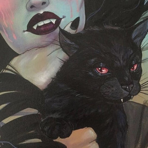

♡
min
Salvo no Spotify
Controlar o progresso da reprodução
-00:00
00:00
Play
1
The Right Way Around
Daughter
02:40
2
Cemetery Drive
My Chemical Romance
03:08
3
Join Me In Death
HIM
03:36
4
Violet
L.S. Dunes
04:21
5
Disenchanted
My Chemical Romance
04:55
6
Guilt Tripping
Frank Iero
04:21
7
Machines
L.S. Dunes
04:06
8
Wake Up
Rage Against The Machine
06:03
9
Sutura
E
PUSHER174
01:51
10
Oceans
E
Frank Iero
04:25
11
Millions
Gerard Way
03:28
12
Give 'Em Hell, Kid - 2025 Mix
My Chemical Romance
02:18
13
Irredutível
PUSHER174
01:20
14
I Never Told You What I Do for a Living - 2025 Mix
My Chemical Romance
03:51
15
Sleep
My Chemical Romance
04:43
16
Luna
Wisp
03:55
17
Silvering Blade
E
Jazmin Bean
03:53
18
Hysteria
Muse
03:47
19
High School Sweethearts
E
Melanie Martinez
05:11
20
My Lovenote Has Gone Flat
Leathermouth
02:19
21
Genesis
Grimes
04:15
22
Violence
Frank Iero, The Future Violents
03:52
23
unravel
TK from Ling tosite sigure
03:58
24
nuts
E
Lil Peep, rainy bear
01:25
25
Que se foda
E
PUSHER174
01:46
26
Hazy Shade of Winter (feat. Ray Toro)
Gerard Way, Ray Toro
03:17
27
Black Out Days
Phantogram
03:47
28
Me deixe
PUSHER174
01:49
29
Helena - 2025 Mix
My Chemical Romance
03:22
30
Kill V. Maim
Grimes
04:06
31
Desert Song
My Chemical Romance
03:50
32
It's Not a Fashion Statement, It's a Deathwish - 2025 Mix
My Chemical Romance
03:30
33
Benadryl Subreddit
L.S. Dunes
03:35
34
Enough Is Enough
E
The Hives
02:46
35
I'm Not Okay (I Promise) - 2025 Mix
E
My Chemical Romance
03:08
36
Oblivion
Grimes
04:11
37
Permanent Rebellion
L.S. Dunes
03:13
38
Would? (2022 Remaster)
Alice In Chains
03:26
39
Kerosene
Crystal Castles
03:12
40
All I Want Is Nothing
Frank Iero
01:50
41
Thriller
Michael Jackson
05:58
42
Sleep Cult
L.S. Dunes
03:45
43
I'm A Mess
Frank Iero
02:56
44
You Know What They Do to Guys Like Us in Prison - 2025 Mix
E
My Chemical Romance
02:53
45
Traumatic Livelihood
E
Jazmin Bean
03:39
46
Action Cat
Gerard Way
03:07
47
Yandere
E
Jazmin Bean
03:31
48
Acorda pra vida
E
PUSHER174
01:41
49
Garoto de internet
E
PUSHER174
01:49
50
Release My Heart
The Black Heart Procession
04:20
51
Deus, pátria e família
E
PUSHER174
01:48
52
I'll Let You Down
Frank Iero
04:26
53
Saddest Smile
Lebanon Hanover
03:44
54
Thank You for the Venom - 2025 Mix
My Chemical Romance
03:41
55
Stockholm Syndrome
Muse
04:56
56
Vanished
Crystal Castles
04:02
57
Girl Like Me
PinkPantheress
02:24
58
Pressure
Paramore
03:05
59
We Are The People
Empire Of The Sun
04:27
60
No Shows
E
Gerard Way
04:12
61
Grey Veins
L.S. Dunes
04:26
62
Violence
Frank Iero
03:52
63
Tonight
PinkPantheress
02:54
64
Angel
Massive Attack, Horace Andy
06:19
65
Are You Ready For Me
E
Pretty Vicious
03:35
66
Vow - 2015 Remaster
Garbage
04:30
67
Joyriding
Frank Iero
02:20
68
Weighted
Frank Iero
04:17
69
Cálice
Indireto, Pitty
03:39
70
Gallowdance
Lebanon Hanover
03:51
71
21 Guns
Green Day
05:21
72
Kiss Me Until My Lips Fall Off
Lebanon Hanover
04:09
73
Fury
Muse
05:00
74
All I Want Is Nothing
Frank Iero
01:50
75
Tourniquet
Marilyn Manson
04:29
76
Purple Rain
Prince
08:41
77
Record Ender
Frank Iero
06:37
78
Drive
Westkust
03:29
79
Favourite Toy
E
Jazmin Bean
03:01
80
Sutura
E
PUSHER174
01:51
81
Favela Venceu
E
PUSHER174, Yun Wob
01:56
82
I'm Not Okay (I Promise)
E
My Chemical Romance
03:06
83
Cirice
Ghost
06:02
84
Hate To Say I Told You So
The Hives
03:20
85
Cemetery Drive - 2025 Mix
My Chemical Romance
03:07
86
Drown
Westkust
02:30
87
It's Not a Fashion Statement, It's a Deathwish
My Chemical Romance
03:30
88
You Know What They Do to Guys Like Us in Prison
E
My Chemical Romance
02:53
89
Helena
My Chemical Romance
03:24
90
Summertime
My Chemical Romance
04:06
91
Me and Your Mama
E
Childish Gambino
06:19
92
0700
Westkust
03:40
93
The Ghost of You - 2025 Mix
My Chemical Romance
03:22
94
Christian Woman
Type O Negative
08:58
95
Black No. 1 (Little Miss Scare -All)
E
Type O Negative
11:15
96
Thank You for the Venom
My Chemical Romance
03:41
Tocar no Spotify
Salvo no Spotify
Copiar link
Política de Privacidade
·
Termos e Condições